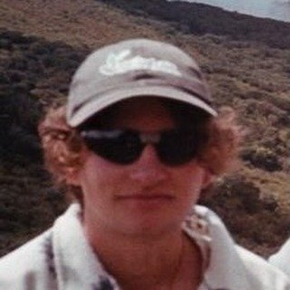

Artist & researcher based between Amsterdam and Mexico City. Working with moving image, archival traces, and embodied narratives.
His practice explores the friction between memory and materiality — often through slow cinema, expanded photography, and site-specific interventions.
⸻ b. 1991, lives and works between NL & MX